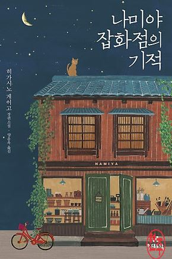
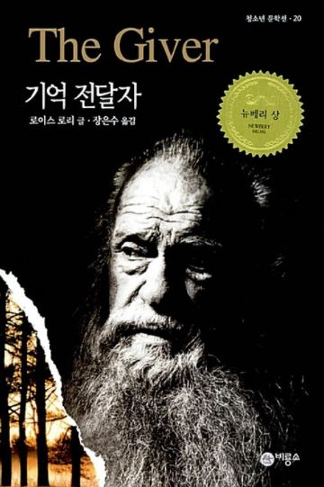

About Novel
나미야 잡화점의 기적

지은이: 히가시노 게이고 | 페이지 456
이 책은 32년간 빈집으로 남겨진 "나미야 잡화점"으로, 도둑이 숨어 들어가면서 시작된다. 도둑들은 그 안에서 여러 편지를 받으면서 고민 상담 내용을 읽게 된다. 그들은 내담자에게 엉뚱한 답장을 보내지만, 좋은 결과를 낳게 해주는 내용이다.
"아니, 몇 마디만 써 보내도 그쪽은 느낌이 다를 꺼야. 내 얘기를 누가 들어주기만 해도 고마웠던 일, 자주 있잖아" 이 말이 가장 인상 깊게 다가왔다. 상담할 때, 상담자의 조언 몇 마디에 큰 고마움을 받고 삶이 변화할 수 있다는 것을 느꼈다. 나도 내 주변 사람들이 고민을 털어놓았을 때 내 일이 아니라고 무심하기보다는 도움이 될 수 있는 몇 마디라도 해 줘야겠다고 느꼈다. 또한, 반대로 생각하면 내가 무심코 뱉은 말이 상대방에게 큰 상처가 될 수 있다고 생각됐다. 항상 행동할 때 언행에 조심하며 상대방을 배려하는 마음을 가져야겠다고 느꼈다.
처음 이 책을 읽었을 때는, 유명해서 재미로 읽었다. 하지만, 두 번째로 읽을 때는 책에 담긴 진정한 의미를 알게 되며 내 삶을 돌아보는 시간을 가졌다. 또한, 소설 속 3명의 도둑이 내담자의 고민을 해결해 준 것처럼 나도 누군가의 고민을 해결해주고 힘이 되는 사람이 되고 싶다.
기억 전달자

지은이: 로이스 로우리 | 페이지 310
조너스가 사는 마을에 대한 이야기이다. 그 마을은 날씨도 매일 똑같고, 일정한 나이에 정해진 옷을 받으며, 마을에서 정해주는 직업을 통해 사는 마을이다. 조너스는 마을에서 가장 큰 직위인 기억 전달자의 후계자로 선정됐다. 조너스는 마을 사람들이 경험해 보지 못한 일들을 경험하고, 색깔을 볼 수 있으며, 여러 가지 감정을 느낄 수 있게 되었다. 그러던 중 조너스는 마을에 대한 의심이 생기게 되는 내용이다.
조너스의 마을 사람들은 풍족하게 살아가지만, 색깔과 감정, 자유를 누릴 수 없다. 조너스는 이러한 마을에서 떠나기를 결정했다. 나는 이러한 선택이 대단하다고 느껴졌다. 익숙한 것을 떠나 불확실한 미래로 도전하기는 쉽지 않다고 생각한다. 나도 막상 조너스처럼 행동할 수 있을까 생각이 들었다. 한편으로는 나도 조너스처럼 살아가야 된다고 느꼈다. 익숙한 것에 계속 빠져 있으면 해결해야 할 문제나 새로운 미래를 보지 못할 것이다. 평소에 나는 정해져 있는 틀을 깨는 것을 싫어한다. 확실하지 않은 미래에 시간을 투자하는 것이 싫기 때문이다. 하지만, 책을 읽고 난 후 이러한 나의 행동이 스스로를 가둬둔 것 같다고 느껴졌다. 남들과 달리 새롭게 생각하는 자세를 가지기를 다짐 할 수 있는 계기가 되었다.
이 책을 조너스의 마을처럼 삶이 아무 동요 없는 사람들에게 추천하고 싶다. 가만히 있는 것이 안전하다고 스스로 안주하고 있지는 않은지, 무엇인가 열심히 해 본 경험이 있는지 깊이 생각하게 해주는 책이다. 모든 일에 적극적으로 다가가고 새로움을 두려워하지 않는 사람이 될 수 있을 것이다.